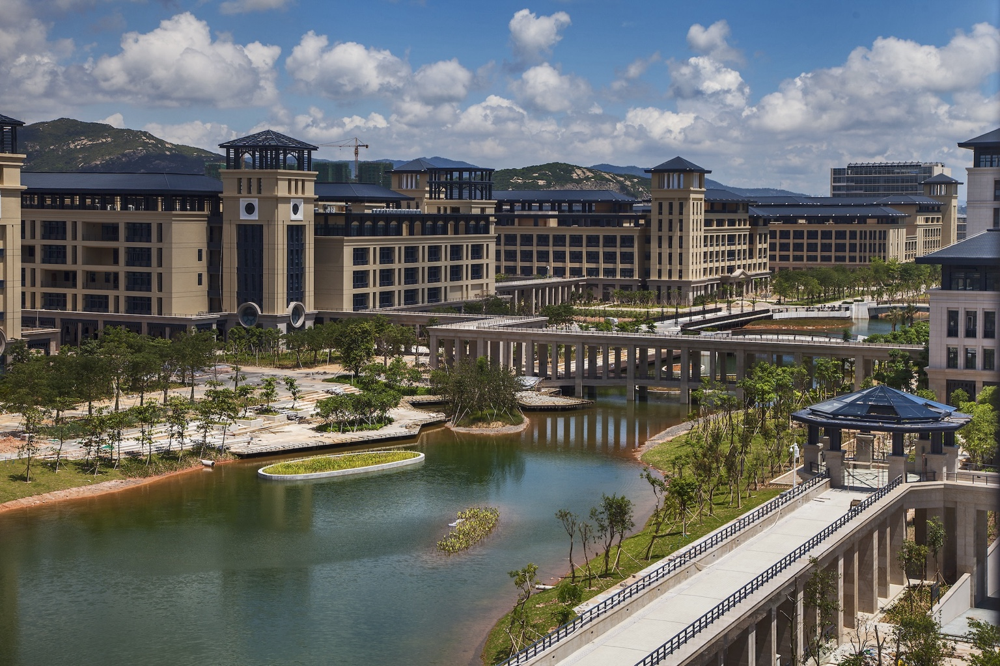
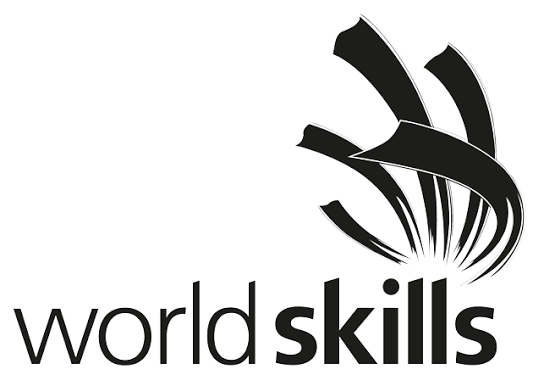
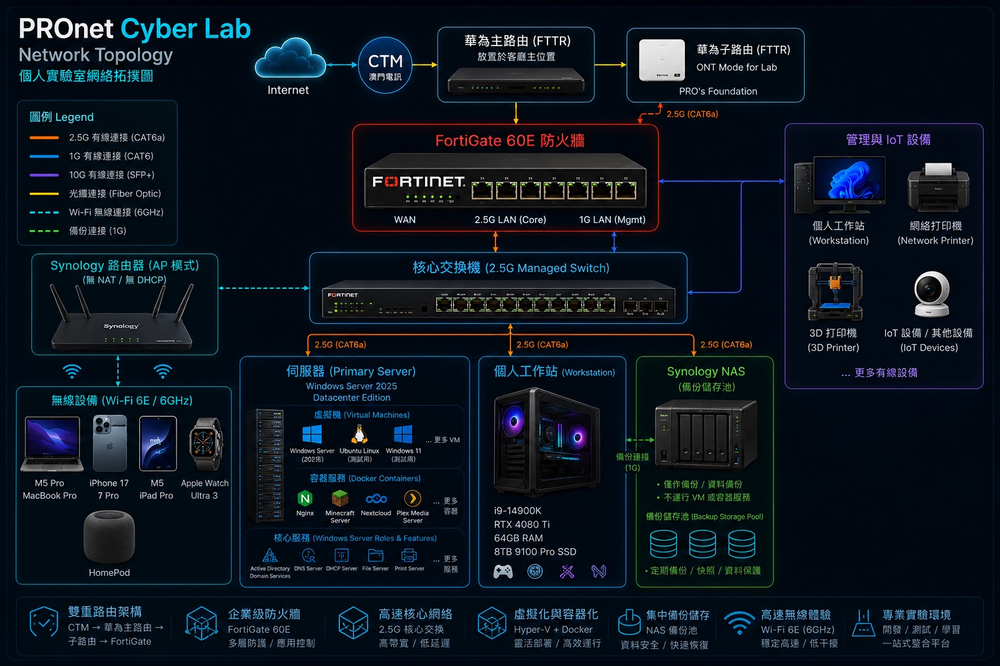

紮根澳門
接軌國際
我的大學規劃與 IT 實踐之旅｜從個人數據中心到未來的網路架構師
個人簡介與願景
我的升學規劃不是單純選擇一所大學，而是把已有的網絡、系統與伺服器實作經驗，轉化成更完整的理論基礎與長期發展方向。
核心身份
IT 網絡系統實踐者 / 系統架構學習者
報告重點
結合專業技術與在地發展的升學策略。
目標院校與專業：
澳門大學 計算機科學
- 目標院校：澳門大學 University of Macau。
- 科研環境：具備高水平科研資源與本地發展優勢。
- 目標專業：計算機科學 Computer Science。
- 契合度：將我的實戰經驗系統化、理論化、學術化。

深耕澳門，
接軌國際
資源最大化
善用澳大科研資源，累積在地人脈與學術基礎。
業界連結
持續深化與本地 IT 專業人士及國際技術社群的連結。
國際跳板
以澳門為基地，專注考取 CCNA 等國際職業認證，作為未來進入全球技術市場的基石。
核心技術棧：企業級系統管理實力
Networking
路由、交換、防火牆、Wi‑Fi、網絡分段
Server Admin
Windows Server、Linux、AD、DNS、DHCP
Virtualization
Hyper‑V、測試 VM、實驗環境隔離
Containers
Docker、Web Server、Minecraft、Nextcloud
Security
Firewall Policy、NAT、基礎安全防護
Storage & Backup
NAS、快照、集中備份、資料保護
Monitoring
服務狀態、效能觀察、故障排查
Automation
腳本、部署流程、重複任務簡化
實戰經驗：從實驗室走向賽場
網絡系統管理不是只會「接線」或「開 Wi‑Fi」，而是要在有限時間內完成網絡規劃、伺服器部署、安全策略、服務整合與故障排查。
設計
規劃拓撲、地址、服務與安全邊界。
部署
配置網絡設備、伺服器角色、VM 與服務。
排錯
快速定位 DNS、路由、防火牆、服務依賴等問題。
WorldSkills Macau 本地賽
本地賽結果讓我更清楚確認：在澳門 18 歲以下的網絡系統管理領域，我已經具備非常突出的專業實力。

Node Zero：個人數據中心解析
這不僅是 Home Lab，更是我的技術研發與服務部署中心。

Core Firewall
FortiGate 60E 作為安全邊界與核心防護。
Server
Windows Server 2025 Datacenter，承載 VM、容器與核心服務。
NAS
作為備份儲存池，不運行 VM 或容器服務。
Workstation
高性能個人工作站，用於開發、測試與日常工作。
互動式基礎架構說明
點擊不同模組，查看它在個人數據中心中的角色。
專業前景與行業分析
- 全球市場需求：隨著雲端運算與 AI 發展，底層網絡架構、系統整合與網絡安全人才的重要性上升。
- 職業發展路徑：短期可走向網絡工程師、系統管理員；中長期可發展為雲端架構師或 IT 基礎設施管理者。
- 我的優勢：具備硬件網絡基建能力與虛擬化部署經驗，能夠補足市場對「懂軟也懂硬」複合型人才的需求。
未來展望：走向國際
高中與大學期間持續考取證書，讓我在大學畢業時擁有更多工作機會與更清晰的職業方向。
高中階段
鞏固網絡、系統、英文與競賽經驗，開始累積國際認證。
大學開始
進入澳門大學計算機科學領域，建立更完整的理論基礎。
大學期間
持續考取 CCNA 等專業證書，並深化個人數據中心與實務專案。
職業發展
以學歷、證書與實戰作品集爭取更多網絡工程、系統管理與雲端基礎架構機會。
謝謝大家！
The journey has just begun.